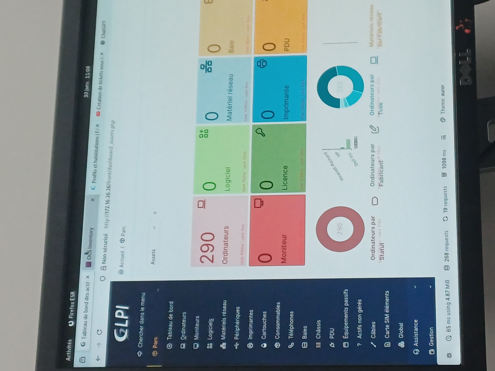

Infrastructure
GLPI 10
Documentation complète : Réseau, Stack LAMP et Déploiement d'agents sur un parc de 290 actifs.
01. État Final du Parc


02. Log de Déploiement & Diagnostics
Configuration & Vérification Réseau
Fixation de l'identité du serveur Debian. Le passage en IP statique via le fichier interfaces garantit la persistance de la communication avec les agents déployés.
ip a
# Configuration de l'IP statique
sudo nano /etc/network/interfaces
# --- CONTENU DU FICHIER ---
auto enp0s3
iface enp0s3 inet static
address 172.16.26.26
netmask 255.255.255.0
gateway 172.16.26.1
# --------------------------
# Redémarrage et Test de connectivité
sudo systemctl restart networking
ping -c 3 google.fr
Préparation Système & LAMP
Mise à jour du socle Debian 12 et installation de la stack Web (Apache, MariaDB) ainsi que des modules PHP requis.
su -
apt update && apt upgrade -y
# Installation Apache et PHP 8.2
sudo apt install apache2 mariadb-server php8.2 php8.2-mysql php8.2-gd php8.2-curl php8.2-xml php8.2-intl -y
# Vérification du statut des services
sudo systemctl status apache2
sudo systemctl status mariadb
Sécurisation & Base SQL
Initialisation de l'instance SQL et création d'un utilisateur sécurisé avec des privilèges restreints sur la base de données GLPI.
sudo mysql_secure_installation
# Configuration SQL
CREATE DATABASE glpi_db;
CREATE USER 'glpi_admin'@'localhost' IDENTIFIED BY 'password';
GRANT ALL PRIVILEGES ON glpi_db.* TO 'glpi_admin'@'localhost'; FLUSH PRIVILEGES
Mise en Production GLPI
Extraction des sources et ajustement récursif des permissions pour permettre au serveur Web de lire et écrire dans les répertoires critiques.
wget https://github.com/glpi-project/glpi/releases/download/10.0.12/glpi-10.0.12.tgz
sudo tar -xvzf glpi-10.0.12.tgz -C /var/www/html/
# Gestion des droits Apache (Point critique)
sudo chown -R www-data:www-data /var/www/html/glpi
sudo chmod -R 755 /var/www/html/glpi
Populations des Actifs
Déploiement de l'agent sur les postes clients. Forçage manuel de l'inventaire pour valider la remontée vers l'interface centralisée.
sudo apt install glpi-agent -y
sudo glpi-agent --server http://172.16.26.26/glpi/ --force
Objectifs Atteints
"Ce déploiement assure désormais une visibilité totale sur l'infrastructure de NDO. La maîtrise de la stack système et réseau garantit la fiabilité des données d'inventaire pour les 290 postes actifs."